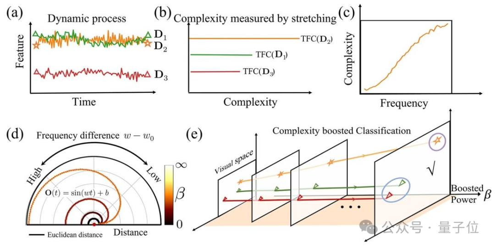

Zhaoran Feng
Ph.D. Student · AI for Science · Scientific Agents
I am a Ph.D. student in Optoelectronic Science and Engineering at Nanjing University, jointly trained with the Shanghai Innovation Institute. My research lies at the intersection of AI for Science, scientific agents, scientific computing, and verifiable learning.
I am interested in turning open-ended scientific problems into executable, verifiable, and reproducible training and evaluation tasks, and in building AI systems that collaborate with scientific data, physical simulators, and code tools to solve complex scientific problems.
Research
My current research focuses on AI systems that can reason, search, optimize, and verify within scientific environments.
- Scientific Agents and Self-Evolving Optimization. Designing agent workflows that jointly decide where to search and how to search through historical experience, tool execution, feedback, and iterative strategy evolution.
- Scientific Data and Verifiable Learning. Building high-quality scientific datasets, benchmarks, and independent verification pipelines for training and evaluating reliable AI systems.
- Physics-Aware AI and Complex Systems. Integrating machine learning with physical priors, simulation, and high-performance scientific computing for climate, quantum, and other complex systems.
Publications

Selected Projects
I developed a multi-agent workflow for high-dimensional, strongly coupled, physics-constrained detector optimization. The system connects historical design retrieval, initial-condition selection, workflow evolution, optimizer evolution, physical simulation, and independent validation in a closed loop.
The project includes the construction and compatibility screening of a historical design database containing 15,409 transferable records. Under matched evaluation budgets, the current system achieves more than 70% improvement over strong fixed workflows.
I built an integer-based independent verifier, an incremental search environment, and a train/evaluation-separated data pipeline for the no-three-in-line construction problem. The project contains 3,200 generated tasks and includes PPO reward design, training recovery, and functional evaluation.
Research Experience
Research exchange at the German Climate Computing Center (DKRZ); kilometer-scale Earth-system modeling and high-performance climate computing; participant in the km-Scale Global Modelling Summit 2026.
Education
Nanjing University × Shanghai Innovation Institute
Tongji University
Soochow University
Contact
Email: 602025220012@smail.nju.edu.cn / GitHub